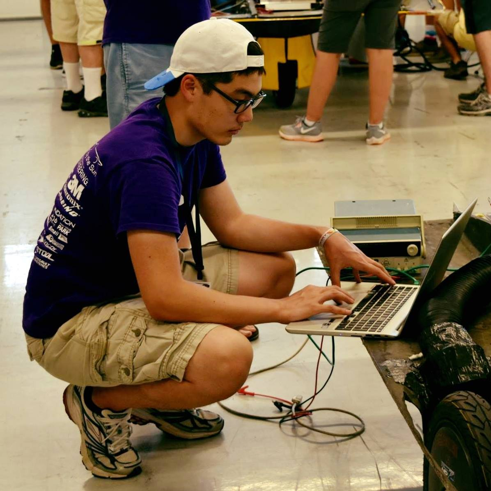

Debugging during scrutineering at FSGP 2017
I am a native Korean, having immigrated to the States with my family as a child. Since then, I have lived in various locations within the Midwest. I grew up playing many different sports, taking a liking to tennis and baseball in particular. I am also fairly well-traveled, having visited places such as Amsterdam, Egypt, and most recently, Iceland.
Growing up under two STEM educated parents influenced me a great deal. I was fond of the understand-by-taking-it-apart approach. I became proficient in computers and interested in robots towards my teenage years. It was this curiosity and love for technology that led me to study computer science for my undergrad at Northwestern, join the solar car team, and eventually, pursue grad school.
I am currently enrolled in the Master of Science in Robotics program at
Northwestern, as part of the 2018 cohort. Here, I hope to gain a more holistic understanding of all things robotics, especially in its software applications.